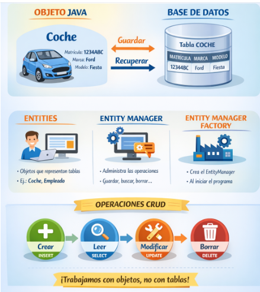
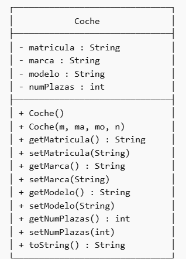
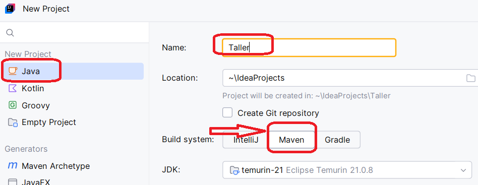
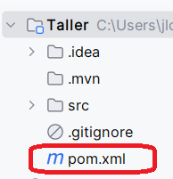
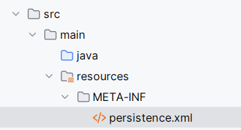
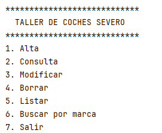
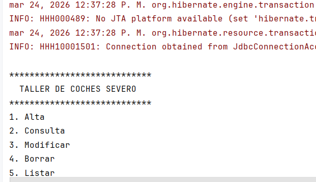

Ejemplo Hibernate¶

Introducción¶
Vamos a ver un ejemplo creando un proyecto en IntelliJ para trabajar con Hibernate en el que persistiremos una clase Coche.
La Aplicación crea la entidad Coche (matrícula, marca, modelo, número de plazas) y la persiste en una BD llamada Taller.

Podéis descargar el ejemplo y probarlo
Crear la base de datos¶
Vamos a trabajar con MySQL o MariaDB, donde es necesario crear la base de datos Taller previamente.
CREATE DATABASE TALLER;
Crear proyecto IntelliJ¶
Es necesario trabajar con Maven, por lo que creamos el proyecto eligiendo Maven

Maven
Maven es una herramienta que ayuda a organizar y gestionar proyectos Java. Si quieres usar Hibernate o cualquier librería tienes que:
Sin Maven
- buscar el .jar en internet
- descargarlo
- añadirlo manualmente al proyecto
Con Maven
- Solo escribes el nombre de la librería
- Maven la descarga automáticamente
- También descarga lo que esa librería necesita
El archivo más importante es pom.xml en el que se define:
- las librerías
- la versión de Java
- el nombre del proyecto
Necesitamos incluir las dependencias para trabajar con Hibernate conectando con MariaDB en el fichero pom.xml

El fichero quedará como sigue:
<?xml version="1.0" encoding="UTF-8"?>
<project xmlns="http://maven.apache.org/POM/4.0.0"
xmlns:xsi="http://www.w3.org/2001/XMLSchema-instance"
xsi:schemaLocation="http://maven.apache.org/POM/4.0.0 http://maven.apache.org/xsd/maven-4.0.0.xsd">
<modelVersion>4.0.0</modelVersion>
<groupId>org.example</groupId>
<artifactId>Taller</artifactId>
<version>1.0-SNAPSHOT</version>
<properties>
<maven.compiler.source>21</maven.compiler.source>
<maven.compiler.target>21</maven.compiler.target>
<project.build.sourceEncoding>UTF-8</project.build.sourceEncoding>
</properties>
<dependencies>
<!-- Hibernate -->
<dependency>
<groupId>org.hibernate.orm</groupId>
<artifactId>hibernate-core</artifactId>
<version>6.4.4.Final</version>
</dependency>
<!-- API Jakarta Persistence -->
<dependency>
<groupId>jakarta.persistence</groupId>
<artifactId>jakarta.persistence-api</artifactId>
<version>3.1.0</version>
</dependency>
<!-- Driver MariaDB -->
<dependency>
<groupId>org.mariadb.jdbc</groupId>
<artifactId>mariadb-java-client</artifactId>
<version>3.3.3</version>
</dependency>
</dependencies>
</project>
Estructura del proyecto¶
Vamos a crear un ejemplo simple, pero la estructura ideal sería utilizar un patrón MVC como hemos visto anteriormente.
La estructura simple será:
Taller/
├─ src/
│ ├─ main/
│ │ ├─ java/
│ │ │ └─ taller/
│ │ │ ├─ Main.java
│ │ │ └─ Coche.java
│ │ └─ resources/
│ │ └─ META-INF/
│ │ └─ persistence.xml
└─ pom.xml
Crear persistence.xml¶
Es necesario crear la carpeta META-INFy el fichero persistence.xml

El fichero indicamos:
- Driver JDBC a la base de datos. En nuestro caso MariaDB
- Las clases que vamos a persistir. En nuestro caso
Coche - Url JDBC a la base de datos. En nuestro caso:
jdbc:mariadb://localhost:3306/taller - Usuario y contraseña de conexión a la base de datos
- La acción sobre la base de datos. Tenemos varias opciones según necesidad y que puede que no funcione adecuadamente si JPA choca con la configuración de Hibernate.
<property name="jakarta.persistence.schema-generation.database.action"
value="create"/>
Las posibles opciones:
| Valor | Descripción | ¿Modifica la BD? | ¿Borra datos? | Uso típico |
|---|---|---|---|---|
none |
No realiza ninguna acción sobre la base de datos | ❌ No | ❌ No | Producción |
create |
Crea el esquema desde cero a partir de las entidades | ✅ Sí | ✅ Sí | Desarrollo inicial |
drop |
Elimina el esquema existente (tablas, etc.) | ✅ Sí | ✅ Sí | Casos específicos / limpieza |
create-drop |
Crea el esquema al iniciar y lo elimina al cerrar la aplicación | ✅ Sí | ✅ Sí | Tests / entornos temporales |
<?xml version="1.0" encoding="UTF-8" standalone="yes"?>
<!-- Configuración de JPA (Jakarta Persistence) -->
<!-- Ubicación del esquema XML incluida en xsi:schemaLocation -->
<persistence xmlns="https://jakarta.ee/xml/ns/persistence"
xmlns:xsi="http://www.w3.org/2001/XMLSchema-instance"
xsi:schemaLocation="https://jakarta.ee/xml/ns/persistence https://jakarta.ee/xml/ns/persistence/persistence_3_0.xsd"
version="3.0">
<!-- Unidad de persistencia -->
<persistence-unit name="default">
<!-- Proveedor JPA (Hibernate en este caso) -->
<provider>org.hibernate.jpa.HibernatePersistenceProvider</provider>
<!-- Clase entidad que se va a mapear -->
<class>taller.Coche</class>
<properties>
<!-- Driver JDBC de MariaDB -->
<property name="jakarta.persistence.jdbc.driver"
value="org.mariadb.jdbc.Driver"/>
<!-- URL de conexión a la base de datos -->
<property name="jakarta.persistence.jdbc.url"
value="jdbc:mariadb://localhost:3306/taller"/>
<!-- Usuario de la base de datos -->
<property name="jakarta.persistence.jdbc.user" value="root"/>
<!-- Contraseña -->
<property name="jakarta.persistence.jdbc.password" value=""/>
<!-- Acción sobre la base de datos al iniciar -->
<!-- create: crea la tabla si es necesario -->
<property name="jakarta.persistence.schema-generation.database.action"
value="create"/>
</properties>
</persistence-unit>
</persistence>
Crear la Entidad¶
Creamos al Entity Coche que permitirá persistir los objetos Coche. Vamos a mantener las sentencia SQL necesarias como consultas con nombre. De esta manera las tenemos centralizadas en un único lugar.
La clave primaria será la matrícula.
package taller;
import jakarta.persistence.Entity;
import jakarta.persistence.Id;
import jakarta.persistence.NamedQueries;
import jakarta.persistence.NamedQuery;
import java.io.Serializable;
@Entity
@NamedQueries({
//permite saber si hay coches para poder insertar unos ejemplos
@NamedQuery(
name = "Coche.contarTodos",
query = "SELECT COUNT(c) FROM Coche c"
),
//permite obtener el listado de coches
@NamedQuery(
name = "Coche.listarTodos",
query = "SELECT c FROM Coche c"
),
// permite obtener el listado de coches de una marca
@NamedQuery(
name = "Coche.buscarPorMarca",
query = "SELECT c FROM Coche c WHERE LOWER(c.marca) = LOWER(:marca)"
)
})
//la clase tiene que ser serializable
public class Coche implements Serializable {
//Para no equivocarnos al llamar a las consultas por nombre, creamos
//constantes con los nombres anteriores
static final String CONTAR_TODOS="Coche.contarTodos";
static final String LISTAR_TODOS="Coche.listarTodos";
static final String BUSCAR_POR_MARCA="Coche.buscarPorMarca";
//EL parámetro de la consulta anterior
static final String BUSCAR_POR_MARCA_marca="marca";
//la clave primaria será la matrícula
@Id
private String matricula;
private String marca;
private String modelo;
private int num_plazas;
//constructor necesario
public Coche() {
}
public Coche(String matricula, String marca, String modelo, int num_plazas) {
this.matricula = matricula;
this.marca = marca;
this.modelo = modelo;
this.num_plazas = num_plazas;
}
public void setMatricula(String matricula) {
this.matricula = matricula;
}
public String getMatricula() {
return matricula;
}
public String getMarca() {
return marca;
}
public void setMarca(String marca) {
this.marca = marca;
}
public String getModelo() {
return modelo;
}
public void setModelo(String modelo) {
this.modelo = modelo;
}
public int getNum_plazas() {
return num_plazas;
}
public void setNum_plazas(int num_plazas) {
this.num_plazas = num_plazas;
}
@Override
public String toString() {
return String.format("%-12s %-12s %-15s %-10d",
matricula, marca, modelo, num_plazas);
}
}
CRUD de Coche¶
Creamos un programa simple que permite el CRUD de la clase Coche. Mostramos un menú con las diferentes opciones para el CRUD

package taller;
import jakarta.persistence.*;
import java.util.List;
import java.util.Scanner;
/**
* Aplicación principal para gestionar coches en un taller.
*
* Este programa implementa un CRUD completo usando JPA:
* - Create → crearCoche()
* - Read → leerCoche(), mostrarCoches() y buscarPorMarca()
* - Update → modificarCoche()
* - Delete → borrarCoche()
*/
public class Main {
/** Fábrica de EntityManager (crea conexiones). */
private static EntityManagerFactory emf;
/** EntityManager: permite interactuar con la base de datos. */
private static EntityManager em;
/** Scanner único para toda la aplicación (entrada por teclado). */
private static final Scanner sc = new Scanner(System.in);
/**
* Lee un número entero desde teclado con control de errores.
* Evita que el programa falle si el usuario introduce texto.
*/
private static int leerEntero(String mensaje) {
int numero = 0;
boolean correcto = false;
while (!correcto) {
try {
System.out.print(mensaje);
numero = Integer.parseInt(sc.nextLine().trim());
correcto = true;
} catch (NumberFormatException e) {
System.out.println("Error: debes introducir un número entero.");
}
}
return numero;
}
/**
* Lee un texto obligatorio (no puede estar vacío).
*/
private static String leerTextoObligatorio(String mensaje) {
String texto;
do {
System.out.print(mensaje);
texto = sc.nextLine().trim();
if (texto.isEmpty()) {
System.out.println("Error: este campo no puede estar vacío.");
}
} while (texto.isEmpty());
return texto;
}
/**
* Método auxiliar para hacer rollback si algo falla.
* Se usa cuando ocurre un error en una transacción.
*/
private static void rollbackSeguro(EntityTransaction tx) {
try {
if (tx != null && tx.isActive()) {
tx.rollback();
}
} catch (Exception e) {
System.out.println("Error al deshacer la transacción.");
}
}
/**
* Comprueba si hay coches en la base de datos.
* Si no hay ninguno, inserta 6 coches de ejemplo.
*/
private static void inicializarCoches() {
EntityTransaction tx = null;
try {
Long total = em.createNamedQuery(Coche.CONTAR_TODOS, Long.class)
.getSingleResult();
if (total == 0) {
System.out.println("No hay coches en la base de datos.");
System.out.println("Insertando 6 coches de ejemplo...");
tx = em.getTransaction();
tx.begin();
em.persist(new Coche("1111AAA", "Seat", "Cordoba", 5));
em.persist(new Coche("2222BBB", "Ford", "Focus", 5));
em.persist(new Coche("3333CCC", "Seat", "Ibiza", 5));
em.persist(new Coche("4444DDD", "BMW", "Serie 3", 5));
em.persist(new Coche("5555EEE", "Audi", "A4", 5));
em.persist(new Coche("6666FFF", "Audi", "A3", 5));
tx.commit();
System.out.println("Coches de ejemplo insertados correctamente.");
}
} catch (Exception e) {
rollbackSeguro(tx);
System.out.println("Error al inicializar los coches.");
}
}
/**
* Muestra la cabecera de la tabla para los listados.
*/
private static void mostrarCabeceraTabla() {
System.out.printf("%-12s %-12s %-15s %-10s%n",
"MATRICULA", "MARCA", "MODELO", "PLAZAS");
System.out.println("-----------------------------------------------------");
}
/**
* CREATE → Inserta un nuevo coche en la base de datos.
*/
private static void crearCoche() {
EntityTransaction tx = null;
try {
System.out.println("\nALTA DE NUEVO COCHE");
String matricula = leerTextoObligatorio("Matrícula: ");
String marca = leerTextoObligatorio("Marca: ");
String modelo = leerTextoObligatorio("Modelo: ");
int numPlazas = leerEntero("Número de plazas: ");
if (numPlazas <= 0) {
System.out.println("Error: número de plazas inválido.");
}else if ( em.find(Coche.class, matricula) != null) {
System.out.println("Error: ya existe un coche con esa matrícula.");
}else {
Coche c = new Coche(matricula, marca, modelo, numPlazas);
tx = em.getTransaction();
tx.begin();
em.persist(c);
tx.commit();
System.out.println("Coche creado correctamente.");
}
} catch (PersistenceException e) {
rollbackSeguro(tx);
System.out.println("Error de base de datos.");
} catch (Exception e) {
rollbackSeguro(tx);
System.out.println("Error inesperado.");
}
}
/**
* READ → Consulta un coche por su matrícula.
*/
private static void leerCoche() {
try {
System.out.println("\nCONSULTA DE COCHE");
String matricula = leerTextoObligatorio("Matrícula: ");
Coche c = em.find(Coche.class, matricula);
if (c != null) {
mostrarCabeceraTabla();
System.out.printf("%-12s %-12s %-15s %-10d%n",
c.getMatricula(), c.getMarca(), c.getModelo(), c.getNum_plazas());
} else {
System.out.println("No existe.");
}
} catch (Exception e) {
System.out.println("Error al consultar.");
}
}
/**
* UPDATE → Modifica un coche existente.
*/
private static void modificarCoche() {
EntityTransaction tx = null;
try {
System.out.println("\nMODIFICACIÓN DE COCHE");
String matricula = leerTextoObligatorio("Matrícula: ");
Coche c = em.find(Coche.class, matricula);
if (c == null) {
System.out.println("No existe.");
} else {
System.out.println("Datos actuales:");
mostrarCabeceraTabla();
System.out.printf("%-12s %-12s %-15s %-10d%n",
c.getMatricula(), c.getMarca(), c.getModelo(), c.getNum_plazas());
String marca = leerTextoObligatorio("Nueva marca: ");
String modelo = leerTextoObligatorio("Nuevo modelo: ");
int plazas = leerEntero("Plazas: ");
if (plazas <= 0) {
System.out.println("Error: número de plazas inválido.");
}else {
tx = em.getTransaction();
tx.begin();
c.setMarca(marca);
c.setModelo(modelo);
c.setNum_plazas(plazas);
tx.commit();
System.out.println("Modificado correctamente.");
}
}
} catch (Exception e) {
rollbackSeguro(tx);
System.out.println("Error al modificar.");
}
}
/**
* DELETE → Elimina un coche.
*/
private static void borrarCoche() {
EntityTransaction tx = null;
try {
System.out.println("\nBORRAR COCHE");
String matricula = leerTextoObligatorio("Matrícula: ");
Coche c = em.find(Coche.class, matricula);
if (c == null) {
System.out.println("No existe.");
} else {
tx = em.getTransaction();
tx.begin();
em.remove(c);
tx.commit();
System.out.println("Borrado correctamente.");
}
} catch (Exception e) {
rollbackSeguro(tx);
System.out.println("Error al borrar.");
}
}
/**
* READ (LISTADO) → Muestra todos los coches en formato tabulado.
*/
public static void mostrarCoches() {
try {
Query q = em.createNamedQuery(Coche.LISTAR_TODOS, Coche.class);
List<Coche> lista = q.getResultList();
if (lista.isEmpty()) {
System.out.println("No hay coches registrados.");
} else {
System.out.println("\nLISTADO DE COCHES");
mostrarCabeceraTabla();
for (Coche c : lista) {
System.out.printf("%-12s %-12s %-15s %-10d%n",
c.getMatricula(), c.getMarca(), c.getModelo(), c.getNum_plazas());
}
}
} catch (Exception e) {
System.out.println("Error al listar.");
}
}
/**
* READ → Busca coches de una marca concreta.
*/
private static void buscarPorMarca() {
try {
System.out.println("\nBÚSQUEDA POR MARCA");
String marcaBuscada = leerTextoObligatorio("Marca: ");
//Construimos la Select
Query q = em.createNamedQuery(Coche.BUSCAR_POR_MARCA, Coche.class);
//incluimos el parámetro
q.setParameter(Coche.BUSCAR_POR_MARCA_marca, marcaBuscada);
List<Coche> lista = q.getResultList();
if (lista.isEmpty()) {
System.out.println("No hay coches de la marca " + marcaBuscada + ".");
} else {
System.out.println("\nCOCHES DE LA MARCA: " + marcaBuscada.toUpperCase());
mostrarCabeceraTabla();
for (Coche c : lista) {
System.out.printf("%-12s %-12s %-15s %-10d%n",
c.getMatricula(), c.getMarca(), c.getModelo(), c.getNum_plazas());
}
}
} catch (Exception e) {
System.out.println("Error al buscar por marca.");
}
}
/**
* Muestra el menú por pantalla.
*/
private static void mostrarMenu() {
System.out.println("\n****************************");
System.out.println(" TALLER DE COCHES SEVERO");
System.out.println("****************************");
System.out.println("1. Alta");
System.out.println("2. Consulta");
System.out.println("3. Modificar");
System.out.println("4. Borrar");
System.out.println("5. Listar");
System.out.println("6. Buscar por marca");
System.out.println("7. Salir");
}
/**
* Método principal.
*/
public static void main(String[] args) {
try {
emf = Persistence.createEntityManagerFactory("default");
em = emf.createEntityManager();
inicializarCoches();
int opcion;
do {
mostrarMenu();
opcion = leerEntero("Opción: ");
switch (opcion) {
case 1 -> crearCoche();
case 2 -> leerCoche();
case 3 -> modificarCoche();
case 4 -> borrarCoche();
case 5 -> mostrarCoches();
case 6 -> buscarPorMarca();
case 7 -> System.out.println("Saliendo de la aplicación...");
default -> System.out.println("Opción no válida.");
}
} while (opcion != 7);
} catch (PersistenceException e) {
System.out.println("Error al conectar con la BD.");
} finally {
if (em != null) em.close();
if (emf != null) emf.close();
sc.close();
}
}
}
Al iniciar la aplicación, Jacarta e Hibernate nos dan información sobre la conexión y errores que puedan suceder, pero si la base de datos está iniciada y los datos de persistence.xml son correctos, nos aparecerá el menú de la aplicación.
